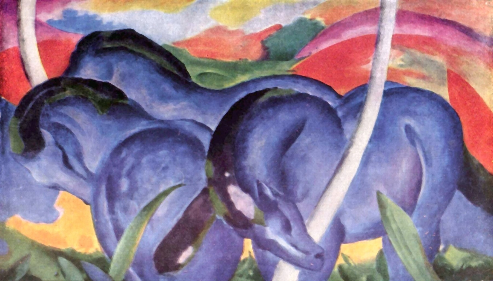
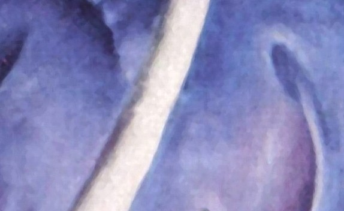
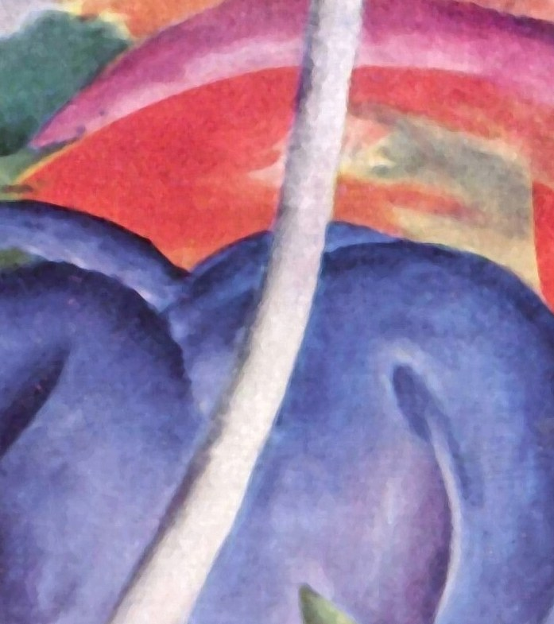
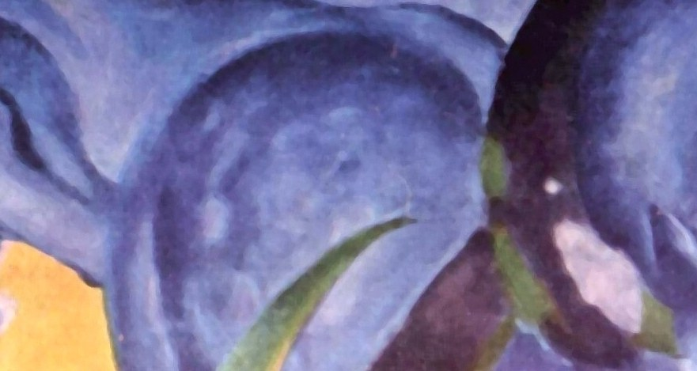
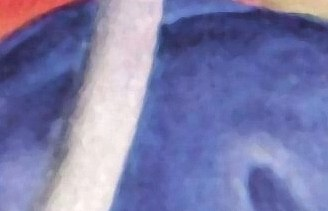
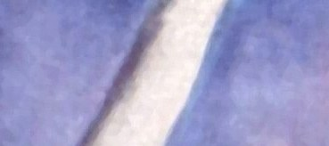
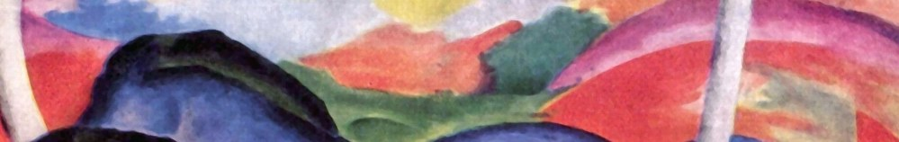
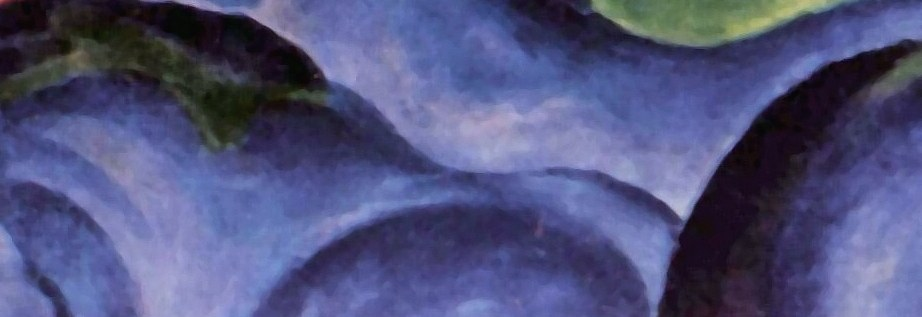
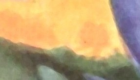

1911 年，弗兰茨·马尔克画了三匹巨大的蓝马，低头站在一片起伏的红色山丘前。没有地平线的叙事，没有人的身影——只有动物、色彩，和一种近乎祈祷的安静。对马尔克来说，动物比人更纯粹、更接近神；而蓝色，是他用来表达「精神」的颜色。
三匹马，被涂成一种不属于任何真实马匹的蓝。
它们站在红与绿的山丘之间，轮廓被简化成饱满的圆弧。
马尔克说，他想画的是动物世界里「和谐、和平与平衡」——一个没有被人类打扰的、精神纯净的伊甸。
—— 画面解读 · 通行说法
马尔克画下的，是他对一个「比人类更诚实」的世界的信仰。
画面只有三个动物和几块原色，却极尽推敲：每一道弧线、每一种颜色，都被马尔克赋予了情绪与意义。

点击画面中的 ✦ 光点 细看每一处 · 图片来源：Wikimedia Commons（公有领域）
从慕尼黑一间画室，到一战战壕，再到今天明尼阿波利斯的墙上——这匹蓝马，走过了德国表现主义最炽热也最短暂的一段岁月。
1903–1910 · 慕尼黑
马尔克早年在慕尼黑学神学，后来转向绘画。他越来越相信：动物比人更接近神，而艺术应当「动物化」——把人的喧嚣，还原成自然的纯粹。
➤1911 · 慕尼黑
1911 年，马尔克与康定斯基共同创立「蓝骑士」（Der Blaue Reiter）社，成员包括好友奥古斯特·马克。蓝色，从此成为他精神世界的图腾色。
➤1916 · 凡尔登
1916 年，马尔克在凡尔登战役中阵亡，年仅 36 岁。他笔下那个「和谐、和平、平衡」的动物世界，最终没能逃过人类的战争。

马尔克有一套私人「颜色象征」：蓝代表男性气概与精神，黄代表女性的温柔与欢愉，红则包裹着暴力与物质世界的声响。
所以他笔下的马是蓝的——蓝色意味着「精神性」，意味着一种不被肉体与世俗污染的纯粹。三匹蓝马，就是三个安放在自然里的灵魂。
画家让·布洛埃·尼斯特莱（Jean Bloé Niestlé）曾劝他「抓住动物的本质」；马尔克终其一生，都在用颜色做这件事。
他还相信艺术应当「避开物质世界、唤起精神」——这让他成为表现主义里最安静、也最虔诚的一支。
※ 颜色象征说见于马尔克 1910–1912 年间的书信与笔记；本页配色解读以此为准。
马尔克没有把三匹马画成一模一样。静立、俯首、扬起——三种姿态轮流出现，才让静止的画面有了呼吸。

右侧大马身体后扬，几乎离地。

左侧两匹并肩低头，与扬马对照。
饱和钴蓝，不写实只表情。

安宁的目光，映出人的失去。

红鬃点醒蓝的沉静。

弧线呼应马背。

红蓝之间的呼吸。

黄代表温柔与欢愉。
1911 年，马尔克与康定斯基在德国创办「蓝骑士」社，成员还有奥古斯特·马克等。他们不追求统一风格，只共享一个信念：用色彩与形式，抵达精神的世界。
与传统油画不同，表现主义把颜色从「描写对象」里解放出来。马尔克的蓝马、康定斯基的抽象，都在证明：色彩本身就是意义。
马尔克（1916 殁）、马克（1914 殁）都在第一次世界大战中阵亡，年仅三十余岁。蓝骑士最灿烂的一瞬，被战争永远截断。
纳粹时期，马尔克约 130 件作品被当作「堕落艺术」清除；今天，他已是德国表现主义不可绕过的人物，明尼阿波利斯、慕尼黑等地都为他设专厅。
《蓝色大马》完成，同年「蓝骑士」社在慕尼黑诞生。三匹蓝马，成为马尔克精神信仰最响亮的宣言。
马尔克于凡尔登战役阵亡，年仅 36 岁。他笔下的「和平动物世界」，成了被战争碾碎的梦。
纳粹「堕落艺术」展中，马尔克约 130 件作品被清除、变卖或销毁——艺术被政治判定为「不纯」。
《蓝色大马》由沃克艺术中心（明尼阿波利斯）收藏至今，成为美国观众最熟悉的马尔克作品。
从明尼阿波利斯的墙面到无数印刷品，这匹蓝马仍在提醒我们：有一种美，安静地站在人类的喧嚣之外。